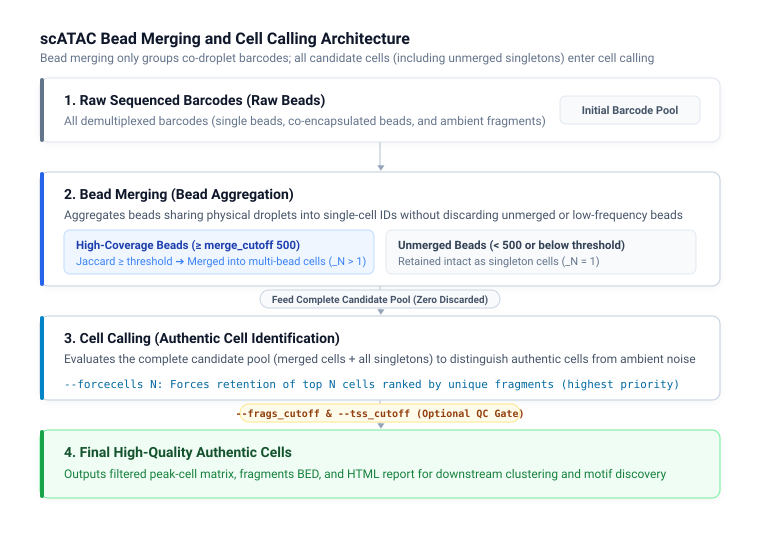

scATAC Parameters¶
DNBelab C Series HT scATAC Parameter Configuration Guide
Overview ¶
This document describes the parameters, default behaviors, and usage patterns for dnbc4tools atac subcommands, including single-sample analysis (run), reference database construction (mkref), and batch script generation (multi).
Tip: Parameter specifications are based on current command-line help outputs. Examples can be used directly as templates.
Main Analysis Workflow (run) ¶
Usage ¶
dnbc4tools atac run \
--name sample1 \
--fastqs /data/atac \
--genomeDir /reference/atac \
--threads 20
Full Command-Line Help¶
$ dnbc4tools atac run --help
dnbc4tools 3.2
Process a single-cell ATAC-seq sample.
Usage: dnbc4tools atac run [OPTIONS]
options:
--help show this help message and exit
Input Files:
Choose one input method: either `--fastqs` (directory input) or individual FASTQ files (`--fastq1` and
`--fastq2`).
--fastqs <DIR> Input directory path containing paired-end FASTQ files. Read 1 and Read 2 files are
detected from the directory (e.g., `./fastq_dir`).
--fastq1 <FILE> Read 1 FASTQ file path(s) for the ATAC library. Wildcards and comma-separated lists are
supported (e.g., `sample1_L01_R1.fastq.gz,sample1_L02_R1.fastq.gz`).
--fastq2 <FILE> Read 2 FASTQ file path(s) for the ATAC library. Must match the order provided to
`--fastq1` (e.g., `sample1_L01_R2.fastq.gz,sample1_L02_R2.fastq.gz`).
Basic Settings:
--name <STR> Unique identifier for the sample. Used for naming output files and reports (e.g.,
`sample1`).
--genomeDir <DIR> Reference genome directory path. Must contain required index and annotation resources
(e.g., `./genome_index`).
--outdir <DIR> Output directory path for results and reports [default: current directory] (e.g.,
`./output`).
--threads <INT> Number of CPU threads for parallel processing [default: all available cores].
Library Settings:
--darkreaction <STR> Dark cycle setting for ATAC library. Supported values: `R1R2`, `R1`, `R2`, `unset` (e.g.,
`R1R2`).
--customize <STR> Custom read structure string. Format: `<type>,<read>:<start>-<end>` joined by `;`. (e.g.,
`"cb,R1:7-16;cb,R1:23-32;R1,R1:66-115;R2,R2:20-69"`).
Filtering Settings:
--forcecells <INT> Force pipeline to use exactly this number of cells (e.g., `5000`).
--frags_cutoff <INT> Additional minimum total unique fragments for called cells [default: 0, disabled]. Cell
calling and other configured QC filters still apply.
--tss_cutoff <FLOAT> Minimum TSS proportion threshold to retain a cell [default: 0.0] (e.g., `0.2`).
--jaccard_cutoff <FLOAT> Jaccard similarity threshold in [0,1] for bead merging (e.g., `0.02`).
--merge_cutoff <INT> Minimum unique fragments per bead for initial bead-merge candidates [default: 500].
Lowering it admits weaker evidence and can change merging and the filtered peak-calling
input.
Analysis Settings:
--need_bam Enable generation of BAM files containing aligned reads.
--sample_read_pairs <INT> Subsample the specified number of read pairs from input FASTQ file(s) (e.g., `1000000`).
Parameter Reference Tables¶
Required & Basic Settings¶
| Option | Type | Default | Description |
|---|---|---|---|
--name |
String | Required | Unique sample identifier; used as output file prefix and report title (e.g., sample_001) |
--genomeDir |
Directory | Required | Reference genome directory path containing index and annotation resources built by atac mkref |
--outdir |
Directory | ./ |
Root output directory for analysis results and HTML reports |
--threads |
Integer | All cores | Number of CPU threads allocated for parallel processing |
Input Files Options¶
Choose one input mode: directory-based (--fastqs) or explicit files (--fastq1 and --fastq2).
| Option | Type | Default | Description |
|---|---|---|---|
--fastqs |
Directory | None | Directory containing paired-end FASTQ files (files reside directly in this directory; paired files detected automatically) |
--fastq1 |
File path | None | Read 1 FASTQ file list (supports wildcards * or comma-separated paths) |
--fastq2 |
File path | None | Read 2 FASTQ file list (order must strictly match --fastq1) |
Tip: Sequencing Consistency & Batch Handling All FASTQ inputs in a single run must originate from the same library batch with identical sequencing modes and dark reaction settings; data from different libraries cannot be mixed. If different sequencing batches of the same library batch exhibit differing dark reaction cycles or read lengths, use the FASTQ trimming tool
fqsubC4to trim reads to match the standard library structure (see Library Structure).
Cell Calling & Bead Merging Settings¶
| Option | Type | Default | Description |
|---|---|---|---|
--forcecells |
Integer | None | Forces the pipeline to retain exactly this number of cells (highest priority, overrides automatic calling). Barcodes are ranked in descending order of unique fragments, and the top N barcodes are selected |
--frags_cutoff |
Integer | 0 (disabled) |
Additional minimum total unique fragments for called cells; 0 disables this extra filter while still running cell calling |
--tss_cutoff |
Float | 0.0 (disabled) |
Minimum TSS proportion threshold to retain a cell; 0 disables this filter (e.g., 0.2) |
--jaccard_cutoff |
Float | auto |
auto |
Jaccard similarity threshold for bead merging (auto estimated via OTSU algorithm, clamped at 0.02 if estimated below 0.02; or manual 0–1 float value) |
--merge_cutoff |
Integer | 500 |
Minimum unique fragments per bead for initial bead-merge candidates |
Library Chemistry & Read Structure¶
| Option | Type | Default | Description |
|---|---|---|---|
--darkreaction |
Choice | auto |
Dark cycle settings: auto, R1R2, R1, R2, unset |
--customize |
String | None | Custom read structure string overriding darkreaction (wrapped in quotes, delimited by semicolons) |
Analysis Settings & Tuning¶
| Option | Type | Default | Description |
|---|---|---|---|
--need_bam |
Flag | Disabled | Enables generation of aligned BAM files (increases runtime and disk usage by 30%–50%). Note: Due to slight discrepancies in how Chromap produces BED versus BAM outputs, enabling --need_bam may introduce minor differences in downstream analysis results |
--sample_read_pairs |
Integer | None | Subsample a specified number of read pairs for rapid benchmarking |
Key Parameter Deep Dives¶
1. FASTQ Directory Structure & Input Rules¶
Unlike the RNA workflow (which requires cDNA/ and oligo/ subfolders), the ATAC --fastqs option points to a flat directory containing paired-end files directly:
fastq_directory/
├── sample_ATAC_L01_R1.fastq.gz
├── sample_ATAC_L01_R2.fastq.gz
├── sample_ATAC_L02_R1.fastq.gz
└── sample_ATAC_L02_R2.fastq.gz
- Naming detection: Supports standard read patterns
_R1_,_R1,_1,_read1paired with_R2_,_R2,_2,_read2; file extensions support.fastq.gz,.fq.gz,.fastq,.fq. - Individual inputs: If not using
--fastqs, supply paired files via--fastq1and--fastq2with comma-separated file lists.
2. Bead Merging & Multi-stage Quality Control¶
Single-cell ATAC-seq exhibits droplet bead co-encapsulation. The pipeline applies a two-stage merging and filtering strategy:

--merge_cutoff: Minimum unique fragments per bead required to participate in Jaccard similarity calculation (default: 500). This parameter only controls bead merging; beads with fewer than 500 fragments or beads without overlapping partners are retained intact as singleton cells and advance to downstream steps without being discarded. In low-depth libraries, this can be lowered (e.g. 200) to allow more beads to be evaluated for merging.--jaccard_cutoff: Jaccard similarity cutoff measuring genomic accessibility overlap between beads. Defaults toauto(OTSU bimodal distribution estimation with a safety floor of 0.02 to prevent over-merging), or a float between 0–1. Beads with $\ge 500$ fragments that do not meet this cutoff are likewise preserved as singletons.--forcecells: Forces retention of a specified number of authentic cells when automatic calling does not meet expectations. Cell calling evaluates the complete candidate pool (both merged multi-bead cells and all singleton beads), sorts candidates by unique fragments in descending order, and directly selects the top N cells.--frags_cutoff&--tss_cutoff: Downstream supplementary QC filters. Setting them to0leaves filtering to the cell calling algorithm. If damaged nuclei debris remains in the report, activate manual cutoffs (e.g.,--frags_cutoff 1000 --tss_cutoff 0.1).--need_bam& Alignment Differences Note: Chromap's direct BED export differs slightly from its SAM/BAM generation and subsequent fragment extraction pipeline in terms of fragment shifting (Tn5 shift) and deduplication boundaries. Consequently, enabling--need_bammay produce minor variations in downstream metrics (such as fragment counts and cell statistics), which is expected behavior.
3. Dark Reaction & Custom Read Structure ¶
Library Structure Reference: For complete ATAC library adapter architecture, extension sequences, and dark reaction schematics, see Library Structure.
--darkreaction: Select based on MGI sequencer chemistry:auto: Automatically detected from base compositionsR1R2: Dark cycles on both Read 1 and Read 2R1: Dark cycles only on Read 1R2: Dark cycles only on Read 2unset: No dark reactions (standard sequencing mode)--customize: Defines exact 1-based intervals for barcodes and reads (overrides darkreaction):# Structure: CB1(7-16bp), CB2(23-32bp), R1(66-115bp), R2(20-69bp) --customize "cb,R1:7-16;cb,R1:23-32;R1,R1:66-115;R2,R2:20-69"
Reference Database Construction (mkref) ¶
dnbc4tools atac mkref builds Chromap genome indices, chromosome tables, and TSS annotation BED files.
Usage¶
dnbc4tools atac mkref \
--fasta genome.fa --ingtf genes.gtf \
--species human --genomeDir /reference/atac
Full Command-Line Help¶
$ dnbc4tools atac mkref --help
dnbc4tools 3.2
Build an ATAC reference database.
Usage: dnbc4tools atac mkref [OPTIONS]
options:
--help show this help message and exit
Input Files:
Input genome FASTA files and gene-annotation GTF files. For mixed-species analysis, separate multiple files with
commas.
--fasta <FILE> Reference-genome FASTA file path(s). Separate multiple files with commas (e.g., `genome.fa`).
--ingtf <FILE> Gene-annotation GTF file path(s). Separate multiple files with commas (e.g., `anno.gtf`).
Basic Settings:
--genomeDir <DIR> Output directory path for generated reference files [default: current directory] (e.g.,
`./ref`).
--species <STR> Species identifier(s) [default: undefined]. For mixed-species references, provide
comma-separated names in the same order as --fasta and --ingtf (e.g., `human,mouse`).
Advanced Settings:
--tag <STR> Feature type used to generate the BED file [default: transcript] (e.g., `exon`).
--chrM <STR> Mitochondrial chromosome name [default: auto-detect common names]. For mixed-species
references, provide comma-separated names in --species order (e.g., `MT,chrM`).
--chloroplast <STR> Chloroplast chromosome name, primarily for plant references [default: disabled] (e.g., `Pt`).
--prefix <STR> Filter chromosomes by prefix or full name. This option is not supported for mixed-species
references [default: no filtering] (e.g., `chr`).
--kmer <INT> k-mer length for Chromap index generation [default: Chromap built-in] (e.g., `20`).
--window <INT> Window size for Chromap index generation [default: Chromap built-in] (e.g., `10`).
--noindex Generate reference files without building the Chromap genome index.
Parameter Reference Tables¶
Required & Basic Settings¶
| Option | Type | Default | Description |
|---|---|---|---|
--fasta |
File path | Required | Reference FASTA path(s) (comma-separated for mixed species, e.g., human.fa,mouse.fa) |
--ingtf |
File path | Required | Gene annotation GTF path(s) (comma-separated for mixed species, e.g., human.gtf,mouse.gtf) |
--genomeDir |
Directory | ./ |
Output directory path for generated reference files |
--species |
String | undefined |
Species identifier(s), comma-separated for mixed species (e.g., human,mouse) |
Advanced Settings¶
| Option | Type | Default | Description |
|---|---|---|---|
--tag |
String | transcript |
Feature type in GTF used to generate the TSS BED file (e.g., transcript, exon) |
--chrM |
String | Auto-detect | Mitochondrial chromosome name(s) in species order (e.g., MT,chrM) |
--chloroplast |
String | Disabled | Chloroplast chromosome name, primarily for plant references (e.g., Pt) |
--prefix |
String | None | Filter chromosomes by prefix or name (not supported for mixed species, e.g., chr) |
--kmer |
Integer | Chromap default | k-mer length for Chromap index generation |
--window |
Integer | Chromap default | Window size for Chromap index generation |
--noindex |
Flag | Disabled | Generates configuration and TSS files without building Chromap index |
Reference Architecture & Key Configurations¶
1. TSS Extraction & Mixed-Species Reference¶
- TSS BED Generation: The tool automatically extracts Transcription Start Sites (TSS) from GTF based on
--tag, used for single-cell ATAC TSS enrichment and proportion calculations. - Mixed-Species Reference:
- Provide matching comma-separated arguments:
dnbc4tools atac mkref \ --fasta human.fa,mouse.fa \ --ingtf human.gtf,mouse.gtf \ --species human,mouse \ --genomeDir /ref/human_and_mouse
2. Directory Layout & ref.json Metadata¶
genomeDir/
├── fasta/
│ ├── genome.fa # Unified FASTA sequence
│ ├── genome.chrom.sizes # Chromosome lengths
│ └── genome.index # Chromap index
├── genes/
│ ├── genes.gtf # Standardized GTF annotation
│ └── tss.bed # TSS annotation BED file
└── ref.json # Reference metadata and validation
Dual-Species ref.json Example:
{
"chrmt": "human_chrM,mouse_chrM",
"chloroplast": null,
"genome": "/database/scATAC/human_and_mouse/fasta/genome.fa",
"genomeDir": "/database/scATAC/human_and_mouse",
"gtf": "/database/scATAC/human_and_mouse/genes/genes.gtf",
"species": "human_and_mouse",
"version": "3.2"
}
Multi-Sample Workflow (multi) ¶
dnbc4tools atac multi generates standalone executable shell scripts for each sample defined in a tab-separated list file. It does not launch analyses automatically.
Usage¶
dnbc4tools atac multi --list samples.tsv --genomeDir /reference/atac --threads 20
Full Command-Line Help¶
$ dnbc4tools atac multi --help
dnbc4tools 3.2
Process multiple ATAC-seq samples.
Usage: dnbc4tools atac multi [OPTIONS]
options:
--help show this help message and exit
Input Files:
--list <FILE> Tab-separated sample list: sample name <TAB> FASTQ R1;R2. Multiple FASTQ files within one
end are comma-separated. Generates one shell script per sample in the current working directory;
run the generated scripts to start analysis.
Basic Settings:
--genomeDir <DIR> Reference genome directory path containing required reference files.
--outdir <DIR> Analysis output directory written into each generated script [default: current directory] (e.g.,
`./output`). Scripts are written to the current working directory.
--threads <INT> Number of CPU threads written into each generated analysis script. If omitted, each analysis
detects available cores when it runs.
Parameter Reference Tables¶
| Option | Type | Default | Description |
|---|---|---|---|
--list |
File path | Required | Tab-separated sample list file |
--genomeDir |
Directory | Required | Reference genome directory path |
--outdir |
Directory | ./ |
Output root directory written into each script (scripts are generated in current working directory) |
--threads |
Integer | Auto-detect | Thread count configured inside each generated script |
Sample List Rules & Execution Workflow¶
1. --list File Specification¶
The sample list must be a tab-separated (\t) text file with 2 columns:
1. Sample Name (sample_name)
2. ATAC FASTQ Paths (paired R1 and R2 separated by semicolon ;, multiple lane files comma-separated ,)
Sample1 /data/S1_L01_R1.fq.gz,/data/S1_L02_R1.fq.gz;/data/S1_L01_R2.fq.gz,/data/S1_L02_R2.fq.gz
Sample2 /data/S2_L01_R1.fq.gz;/data/S2_L01_R2.fq.gz
2. Execution & Cluster Dispatch¶
- Running
dnbc4tools atac multicreates per-sample shell scripts (e.g.,Sample1.sh,Sample2.sh) in the current directory. - Each script contains the complete parameterized
dnbc4tools atac runcommand. - Users can run scripts directly via
bash Sample1.shor submit them to batch workload managers (e.g., Slurm, SGE).